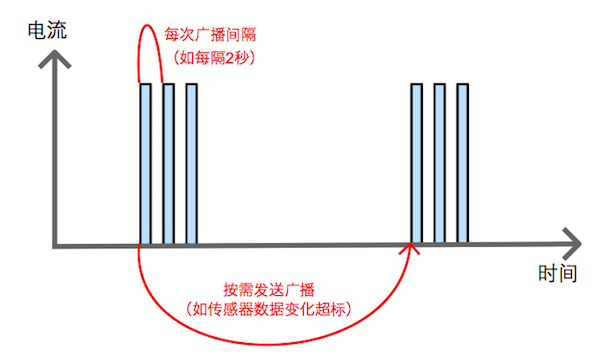

最近，我国东部大面积地区雾霾严重，云遮雾罩，PM2.5连日爆表，几百米之外不见人影。考虑到PM2.5在整个城市内分布不均匀，有小伙伴在制作可随身携带的便携式PM2.5检测仪，当检测到用户所在环境PM2.5超标的时候，提醒用户佩戴口罩。
该PM2.5检测仪使用低功耗蓝牙(Bluetooth Low Energy)和手机通信，将检测数据发送给手机APP，手机APP继而可以实现数据分析、超标提醒、用户分享、社区服务等功能。
由于对产品的外观和体积有一定要求，该PM2.5检测仪使用了容量较小的电池。为了提高续航时间，降低设备在蓝牙层面上所花的功耗，在此提出一种低功耗的蓝牙数据发送机制。
首先，补充一些低功耗蓝牙(Bluetooth Low Energy)的概念。让设备和手机进行数据通信，会涉及以下几个步骤：
为了将传感器采集到的数据递交给手机，有以下几种做法：
(1) 建立蓝牙连接发送数据
这种做法的大体流程是：当设备和手机处于蓝牙信号范围以内时，两者就建立起蓝牙连接，随之设备将传感器数据实时的发送给手机。即，断开连接后设备周期性广播，建立连接后设备发送数据。这是一种相对传统的做法，特点是在建立连接后，设备发送数据的延时性(latency)很小，但是由于设备可能长时间保持着蓝牙连接或是长时间周期性广播，功耗较大。
(2) 通过蓝牙广播发送数据
很多传感器采样得到的数据量不大，如温度传感器每次采样得到一个温度、本例的PM2.5传感器每次采样得到一个PM2.5数值，这通常就是几个字节的数据量。在这种情况下，传感器采样的数据可以通过蓝牙广播的直接发送出去，设备和手机无需建立起蓝牙连接。由于“蓝牙广播”是散射的，周围的手机都可以监听到，如果对数据隐私有一定要求，可以在蓝牙广播中加入一些安全加密的算法。
考虑蓝牙层面的功耗，蓝牙广播包的发射电流通常为10~20mA，发射电流通常是一个瞬时脉冲。如果以2秒的间隔发送蓝牙广播，除了发送蓝牙广播的瞬间，其他时候芯片处于待机状态，待机电流一般在几个uA。平均下来，2秒发一个广播包的平均电流在15uA左右。一颗CR2032纽扣电池的容量为200mAh，能够为其供电一年以上。
进一步考虑功耗问题，本例中PM2.5检测仪是想在环境发生变化的时候记录数据和通报手机，比如，当用户进入一个PM2.5比较严重的区域时。在其余时候，如果用户待在同一个区域，PM2.5数据很稳定，频繁多次的发送PM2.5数据给手机APP是无意义的。基于这个认知，我们调整蓝牙广播的发送机制，也就是当发现PM2.5传感器两次采样的数据变化大于一定阈值，开启蓝牙广播，将数据发送出去，连续发送多次后停止广播。从整个时域来看，设备不是一直在发送蓝牙数据，而是有时发送，有时停止。我们把这种机制称为“按需发送的蓝牙广播”：
目前火热的iBeacon技术就是一种符合特定格式的蓝牙广播(详见iBeacon配置工具)，这种格式是由Apple标准化定义的，iPhone4s以上的Apple移动设备都予以支持。Android 4.3以上移动设备支持低功耗蓝牙，软件层面可以实现iBeacon应用。近来，Android也推出了一套自己的标准，称之为Eddystone技术。
设备端发送iBeacon或是Eddystone的广播包，如iBeacon中的Major和Minor字段可以用来携带传感器数据。移动端使用iBeacon或Eddystone的API就可以接收到数据。如果不使用iBeacon或是Eddystone等规范的话，移动端就需要自行设计一套扫描机制，长时间监听着周围的蓝牙广播，并且该APP需要做到后台运行和常驻内存，这在iOS和Android上多少会有一些困难，不如使用系统所支持的iBeacon或Eddystone来的方便。
综上，通过这种“按需发送的蓝牙广播”的机制来和手机传输数据，它让设备整体的功耗降到最低，可以适配各类传感器，应用到可穿戴、智能家居、安防监控等领域。
蓝牙
续航时间
移动端
软件
硬件
请发邮件至hello@jumacc.com，客服人员会和您联系。